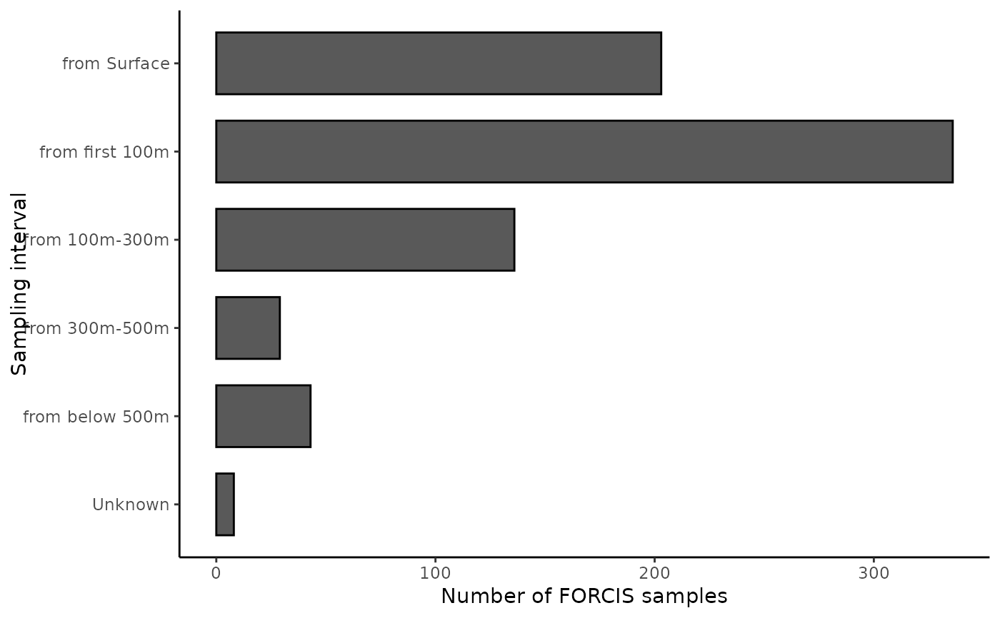

This function produces a barplot of FORCIS sample records by depth.
Examples
# Attach the package ----
library("forcis")
# Import example dataset ----
file_name <- system.file(file.path("extdata", "FORCIS_net_sample.csv"),
package = "forcis")
net_data <- read.table(file_name, dec = ".", sep = ";")
# Add 'data_type' column ----
net_data$"data_type" <- "Net"
# Plot data by year (example dataset) ----
plot_record_by_depth(net_data)
#> Warning: There was 1 warning in `mutate()`.
#> ℹ In argument: `upper_lim = as.numeric(gsub("-.*", "",
#> .data$sampling_interval))`.
#> Caused by warning:
#> ! NAs introduced by coercion
